Engineering AAV when the search space is the problem
Four medicines. Each works because someone chose the sequence.
A chimp cold virus (adenovirus), emptied and reloaded.
≈35 kb of DNA (35,000 letters)
The virus is the courier, not the medicine.
The gene it carries was written, not discovered.
Source of the virus
The van: a courier, not the medicine
Voysey et al. (2021)
Just the message, wrapped in a fat bubble.
4,284 nucleotides
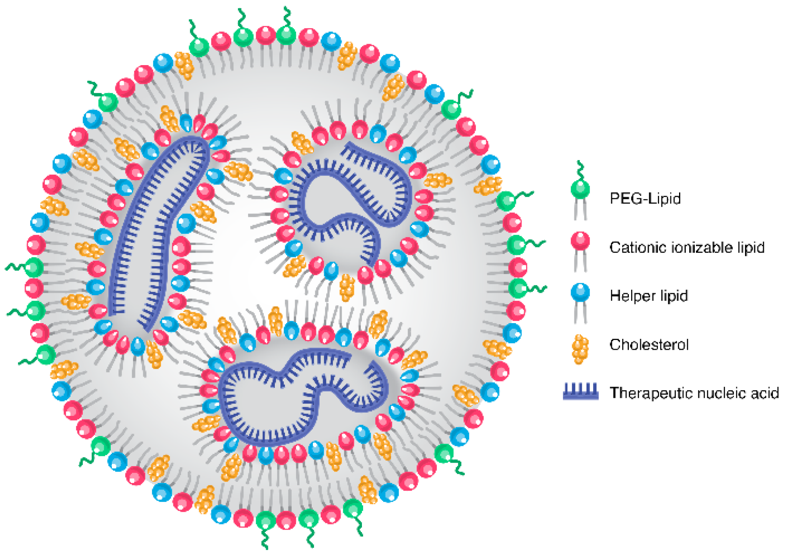
Designed in days from the virus genome.
Uğur ŞahinBioNTech
Özlem TüreciBioNTech
Polack et al. (2020)
Your innate immune system treats plain mRNA as infection and destroys it.
Swapping every uridine for N1-methylpseudouridine quiets the alarm.
Same message, different chemistry: the alarm stays quiet.
Katalin Karikówith Drew Weissman — Nobel Prize, 2023
Polack et al. (2020)
Duchenne muscular dystrophy: muscle breaks down without dystrophin.
≈5 kb cassette: gene plus switch
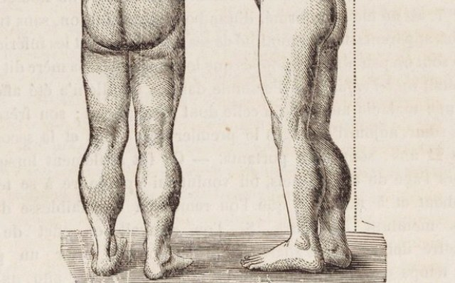
Calf swelling, from Duchenne’s 1868 plates.
The van is fixed. The cargo was redesigned.
Mendell et al. (2023)
No virus: a protein made in cultured cells.
≈1.4 kb of coding sequence
Jimmy CarterAnnounced metastatic melanoma in August 2015; clear scans by December
Spread melanoma, treated with surgery, radiosurgery and this antibody.
The product is a protein. The asset is the sequence.
Length does not predict impact. The design problem is the same.
AAV cannot copy itself alone. That defect is why we use it.
Problem. Without the RPE65 gene, light-sensing cells die.
AAV carries. A working RPE65 copy, injected under the retina. Luxturna, 2017.
Result. People could cross an obstacle course in dim light again.
First US-approved gene therapy for an inherited disease.
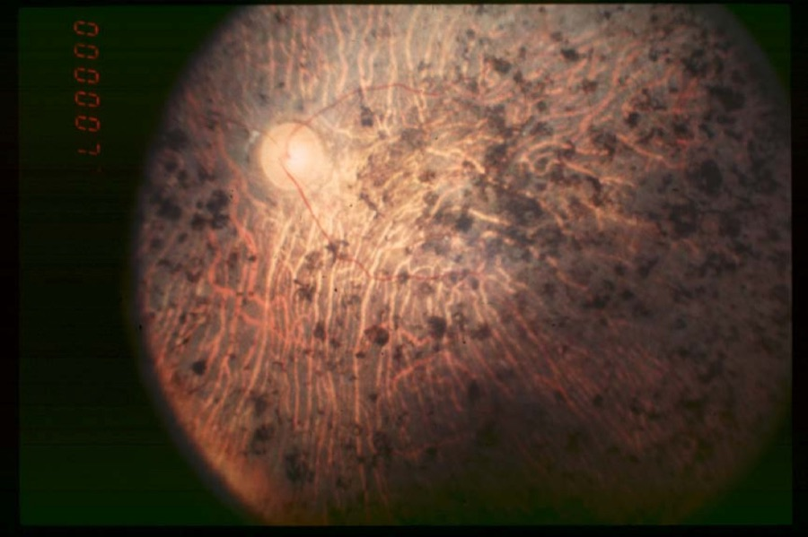
A retina in advanced degeneration. Photo: Christian Hamel, CC BY 2.0.
U.S. Food and Drug Administration (2026a)
Problem. Without SMN1, the nerves that move muscles die.
AAV carries. A working SMN1 gene, in one drip into a vein. Zolgensma, 2019.
Result. Treated babies have sat up, and many have walked.
One drip, not lifelong treatment.
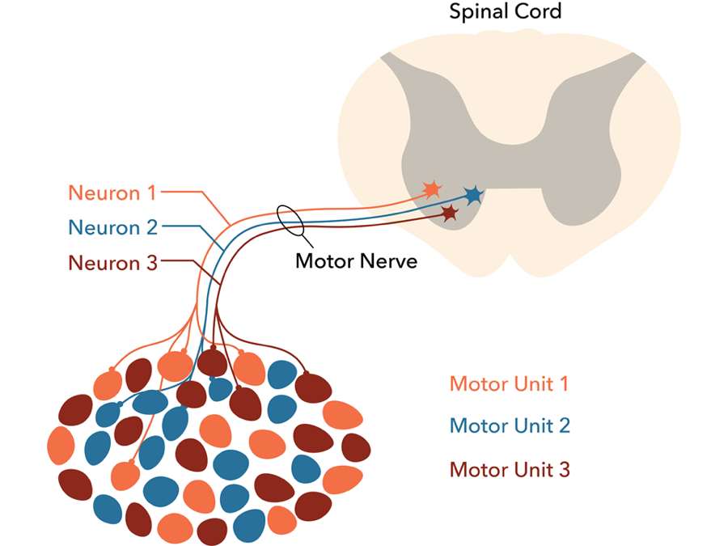
Nerve cells in the spinal cord drive muscles. Diagram: Walsh and Sved, CC BY-SA 4.0.
U.S. Food and Drug Administration (2026a)
Problem. In haemophilia B, the liver lacks clotting factor IX.
AAV carries. A working factor IX gene, in one drip. The liver makes the protein. Hemgenix, 2022.
Result. Bleeding fell and most people stopped regular injections.
The patient’s own liver becomes the factory.
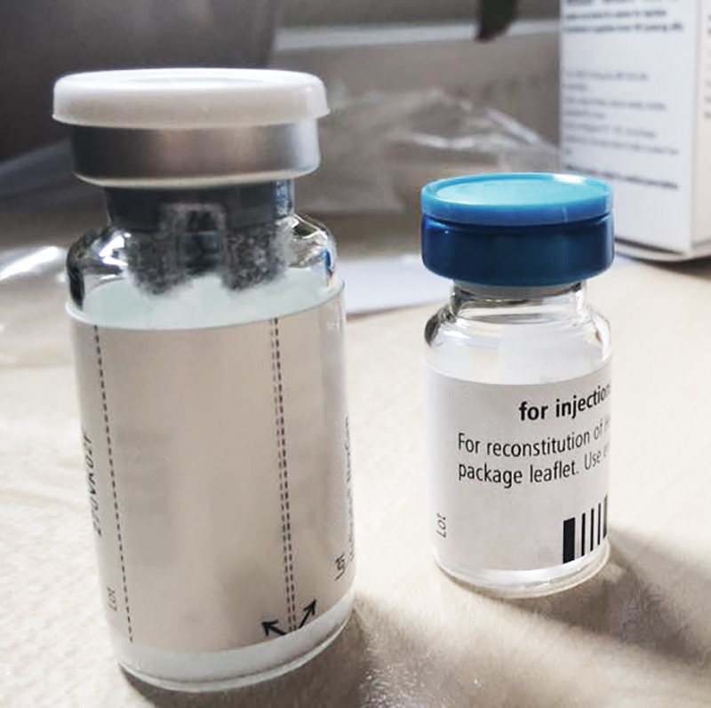
Clotting-factor concentrate, the lifelong infusion gene therapy aims to replace. Photo: JJEv810, CC BY-SA 4.0.
U.S. Food and Drug Administration (2026a)
Problem. Without OTOF, ear cells cannot signal to the brain.
AAV carries. A working OTOF gene, split across two viruses, into the cochlea. Otarmeni, 2026.
Result. Children who had never heard began to hear speech.
First approved treatment for genetic deafness.
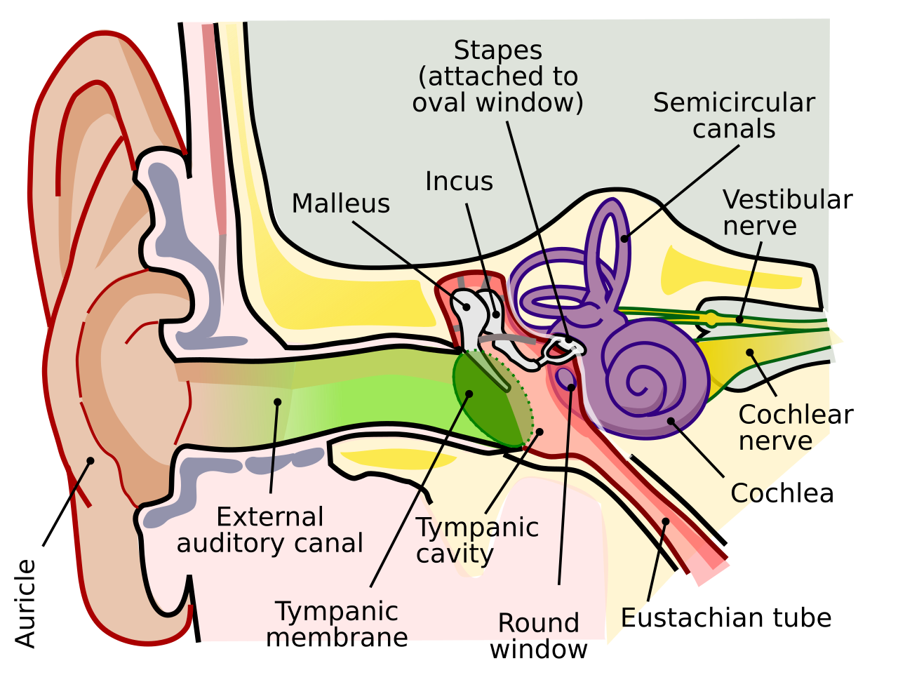
The cochlea is the spiral in the inner ear. Diagram: Chittka and Brockmann, CC BY 2.5.
U.S. Food and Drug Administration (2026a)
A virus is instructions in a protein shell.
A virus is a delivery van carrying instructions.
Drag it.
Xie et al. (2002)
Sixty identical pieces, arranged like a 20-sided ball.
Xie et al. (2002)
DNA
the stored copy
RNA
a working copy
Amino acids
one per codon
Protein
the folded machine
Same colours, same codons: DNA is read into RNA, RNA into amino acids, and the chain folds.
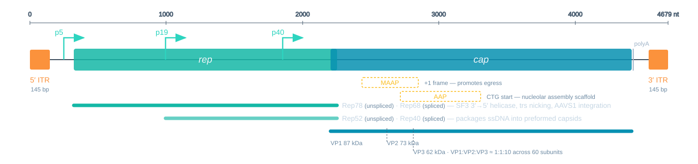
Two genes: rep copies and packages. cap builds the shell. Short DNA hairpins (ITRs) mark each end.
Samulski and Muzyczka (2014)
Rep78 and Rep68
Start copying. They can also insert viral DNA at one spot on chromosome 19.
Rep52 and Rep40
Motors that pull the genome into the shell.
The numbers are sizes in kilodaltons.
Delete rep and the virus loses its fixed insertion site.
Kotin et al. (1990)
One gene, three versions.
| VP1 | 87 kDa | has a membrane-breaking tail |
| VP2 | 73 kDa | not essential |
| VP3 | 62 kDa | most of the shell |
Ratio about 1 : 1 : 10.
Five VP1 copies let the virus escape the endosome.
Girod et al. (2002)
AAP
Hidden inside cap. Helps build the shell.
MAAP
A different reading frame of the same DNA. Helps the virus leave the cell.
A 2019 mutation scan revealed MAAP.
A gene nobody had spotted emerged from the data.
AAV needs a helper virus to copy itself.
Adenovirus, a cold virus, can help.
Herpes simplex virus can too.
For medicine, this is a feature:
Not copying itself is the safety feature.
Samulski and Muzyczka (2014)
Good vaccine
Poor gene therapy
A vaccine wants an immune response. Gene therapy does not.
Dunbar et al. (2018)
Same fold, same 60 pieces. Only the outer loops differ.
Surface loops decide which tissue a virus reaches.
A vector is a virus rebuilt as a delivery van. Every viral gene goes. Only the end “handles” stay.
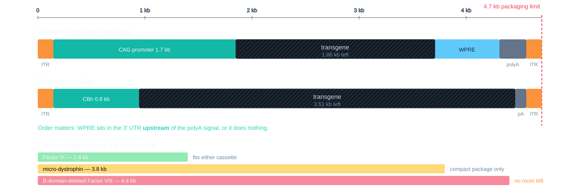
| Gene to deliver | Size | Fits? |
|---|---|---|
| Factor IX (clotting protein) | 1.4 kb | easily |
| micro-dystrophin (short muscle protein) | 3.8 kb | just |
| Factor VIII (trimmed clotting protein) | 4.4 kb | no room left |
| dystrophin (full length) | 11 kb | never |
Duchenne therapy uses a shrunken “micro” dystrophin. Haemophilia A is harder to treat than B.
A shell’s size limit shapes the medicine.
Mendell et al. (2023)
| Product | Delivery virus | Gene delivered | Where it is given |
|---|---|---|---|
| Zolgensma (2019) | AAV9 | SMN1 0.9 kb | into a vein |
| Itvisma (2025) | AAV9 | SMN1 0.9 kb | into spinal fluid |
| Hemgenix (2022) | AAV5 | F9 Padua 1.4 kb | into a vein |
| Kebilidi (2024) | AAV2 | DDC 1.4 kb | into the brain |
| Fayuvi (2026) | AAV9 | SGSH 1.5 kb | into a vein |
| Luxturna (2017) | AAV2 | RPE65 1.6 kb | under the retina |
| Elevidys (2023) | AAVrh74 | micro-dystrophin 3.8 kb | into a vein |
| Otarmeni (2026) | AAV1 × 2 | OTOF 6.0 kb | into the inner ear |
Sorted by gene size. Only the last is too big.
OTOF is 6 kb, so it is split across two vectors. The cell stitches it back together.
The limit did not move. The design did.
Between injection and a working gene, most of the dose is lost.
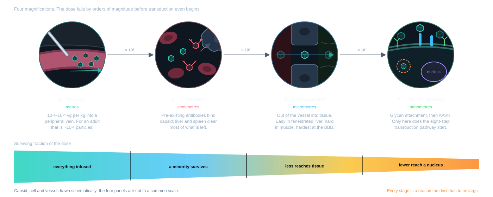
Mingozzi and High (2013)
The cell still notices this DNA.
Nakai et al. (2001)
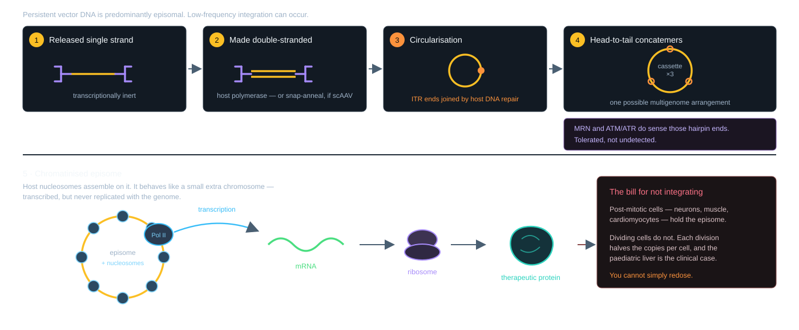
Nakai et al. (2001)
The circle is not copied when the cell divides.
Non-dividing cells (neurons, muscle): circles can last.
Dividing cells (a child’s liver): the vector is diluted.
The price of deleting rep, the gene that let the virus integrate.
Safety gained; permanence lost.
Lasting for decades is untested.
Nakai et al. (2001)
One patient needs trillions of virus particles. That is a factory job.
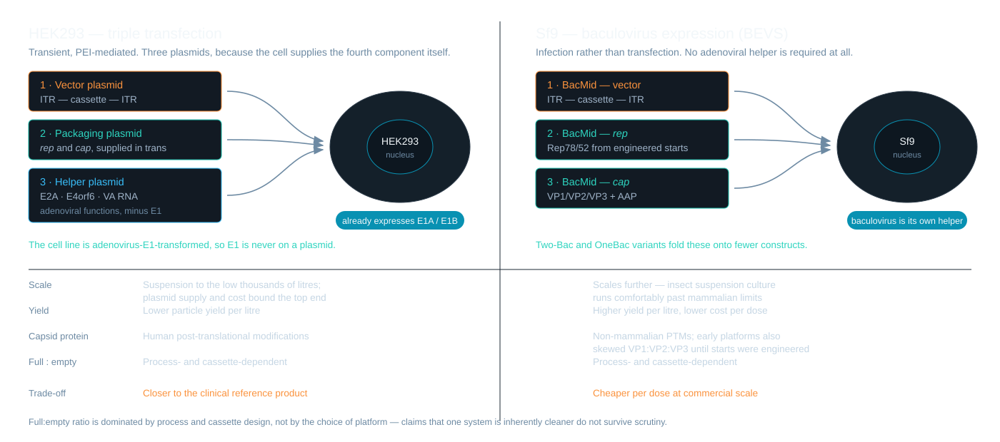
Urabe et al. (2002)
1951, Baltimore. Henrietta Lacks, 31, is treated for cervical cancer. A doctor takes a tumour sample. Nobody asks her.
Her cells kept dividing in a dish. They became HeLa.
The first human cells that would not die.
Statue of Henrietta Lacks, Bristol. Photo: 14GTR, CC BY-SA 4.0.
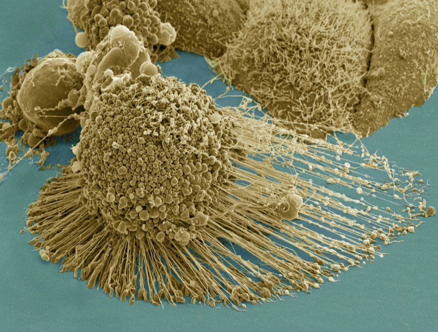
A HeLa cell, scanning electron micrograph. Photo: NIH, public domain.
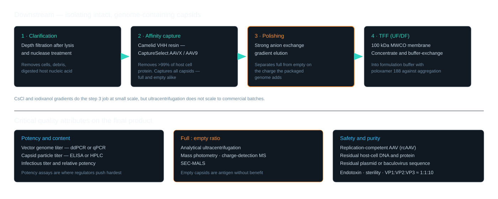
Mingozzi and High (2013)
An empty capsid is a shell with no gene. The body still sees it.
Every batch is checked for full versus empty shells.
Foreign protein, no benefit.
Mingozzi and High (2013)
A bigger dose works better, but harms more.
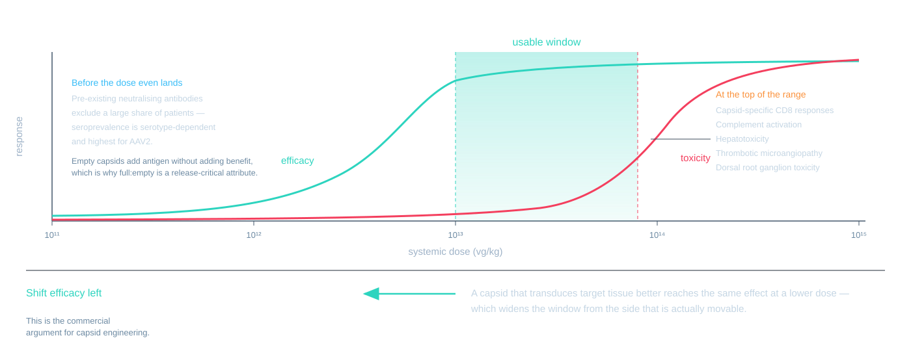
Before treatment
Neutralising antibodies block the virus. These patients cannot be treated.
At the right dose
Killer T cells destroy liver cells showing viral protein. Gene expression falls.
Above the right dose
Complement (blood proteins that attack foreign surfaces), plus liver and nerve damage.
We can redesign three parts of a gene therapy vector: the shell, the switch and the DNA ends.
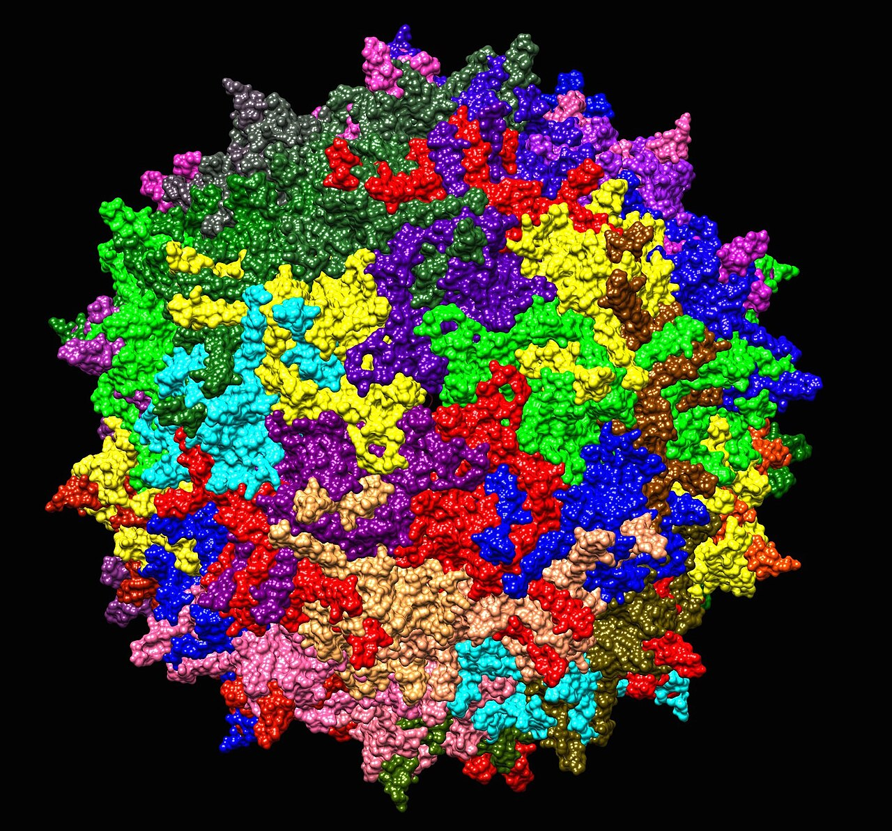
Capsid
The protein shell. It picks the target cells and dodges antibodies.
A protein-surface problem.
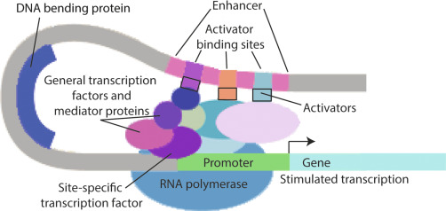
Promoter
The DNA switch. It sets where, and how strongly, the gene turns on.
A gene-regulation problem.
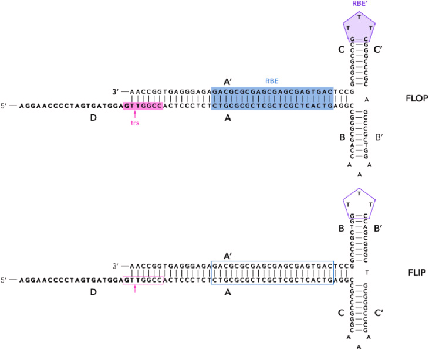
ITR
Short DNA repeats at both ends. They help packaging and persistence.
A DNA-shape problem.
The capsid protein has 735 amino acids. Each can be one of 20.
A 60-residue stretch alone has about 10⁷⁸ possible sequences.
Nine orange peaks are measured natural capsids. The rest is untested.
Romero and Arnold (2009)
Parent genes are cut up and reassembled. Each colour is one parent.
Cut up several natural capsid genes. Let them reassemble as mosaics. Keep the ones that work.
Grimm et al. (2008)
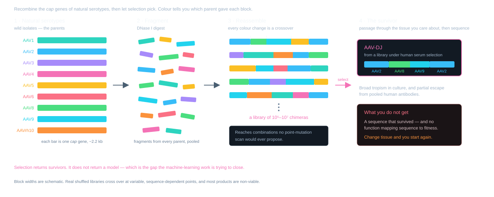
Grimm et al. (2008)
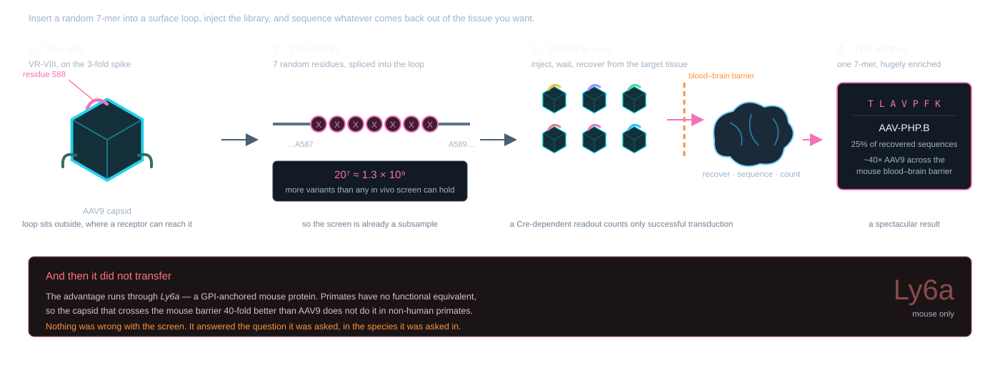
It worked in mice. Mice were the wrong model.
Deverman et al. (2016)
Model: a rule learned from examples that predicts.
Training: adjusting the rule to fit the examples.
Testing: checking it on examples it has never seen.
Follow one variant down three trees. Do they agree?
Breiman (2001)
Fit4Function: one model per measurable property.
Six properties, combined.
88% of designed variants met all six.
No one predictor carries across species. All six together do.
Eid et al. (2024)
Can 3D structure alone predict how well a capsid is produced?
No measured AAV data was used to train.
Threefold more mutations beat the natural capsid than random ones. Preprint.
A capsid you cannot make is no medicine.
All of this can be calculated from a structure.
Mikos et al. (2021)
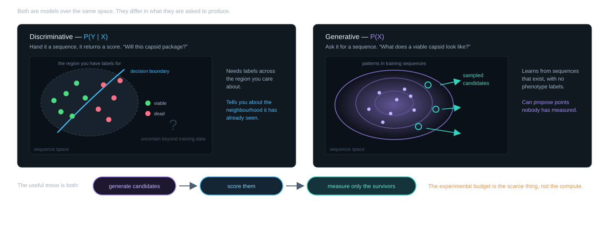
Ng and Jordan (2001)
A VAE squeezes, then rebuilds.
Encoder: sequence to a few numbers.
Decoder: numbers back to a sequence.
Move the marker: the sequence changes smoothly.
A generative model learns patterns from many examples, then writes new ones that fit.
Like autocomplete for proteins.
The examples are sequences nature already made.
The model proposes new ones.
Data matters more than the type of model.
Bryant et al. (2021)
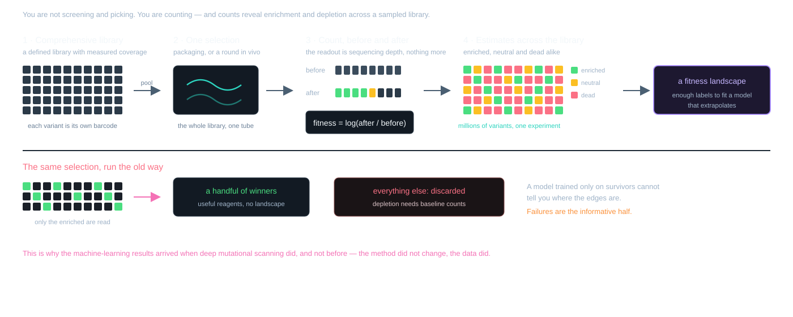
Count variants before and after: winners rise, losers fall.
Ogden et al. (2019)
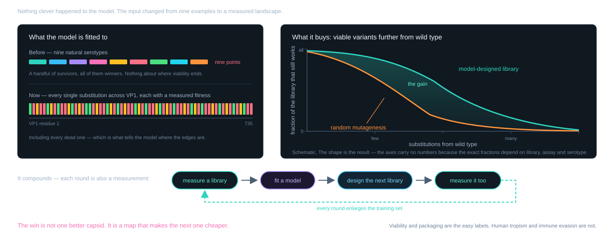
The model learns what works, instead of us assuming.
A promoter is DNA beside a gene where transcription starts.
Goal: gene on only in the target tissue, in as little DNA as possible.
Why:
Specificity written into the DNA.
Gray et al. (2011)
Michael RobertsSynpromics → AskBio → Bayer · now Chromatin Bioscience
Screened libraries of short binding sites, then assembled the best into small, tissue-selective switches.
AMT-191: Fabry disease treatment. A liver-selective promoter drives the GLA gene.
First four patients: 27-208 times normal enzyme activity (company-reported, July 2025).
Designed, not borrowed.
uniQure (2025)
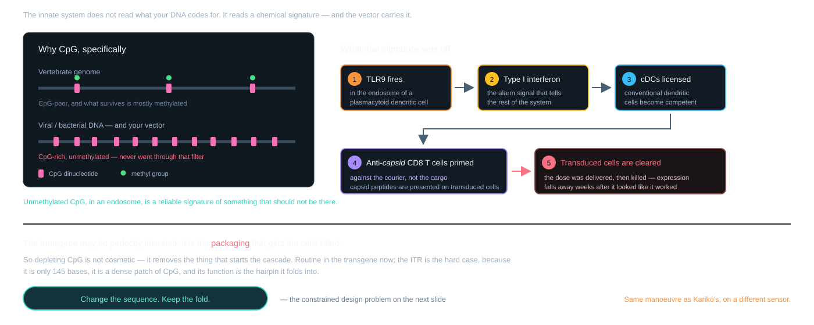
An innate alarm turns gene delivery into immune attack.
The ITR is a short stretch at each end of the viral DNA. It folds into a hairpin that the enzyme Rep recognises.
It is also rich in CpG.
Only 145 bases.
Faust et al. (2013)
The limit is the dose ceiling: how much virus a patient can safely receive.
A better shell works at a lower dose.
Next steps:
Biology sets the rules; the rest is search.
Structures — RCSB PDB. AAV2 1LP3, AAV9 3UX1. Icosahedral assemblies expanded in-browser from the deposited asymmetric units.
Software — three.js and NGL Viewer, both MIT, vendored into this repository.
Diagrams — drawn for this deck; MIT with the rest of the source.
Portraits — via Wikimedia Commons. CC BY-SA 4.0:
Public domain: Jimmy Carter — Lauren Gerson, LBJ Presidential Library, 2014.
Plate — Duchenne de Boulogne (1868), public domain.
Three Parts, Three Problems — AAV2 capsid surface: Jazzlw, CC BY-SA 4.0, derived from PDB 1LP3, via Wikimedia Commons. Promoter and ITR figures are from the original talk; their sources are not recorded here.
Vaccine 1 and 2 — chimpanzee: Mira Meijer, Burgers’ Zoo, CC BY-SA 4.0; delivery van (Ford Transit Connect): Winnebaggo, CC0; both via Wikimedia Commons. The lipid-nanoparticle diagram is from the original talk; its source is not recorded here.
HeLa — statue of Henrietta Lacks, 14GTR, CC BY-SA 4.0; HeLa cell micrograph, NIH, public domain. Via Wikimedia Commons.
AAV successes — retina photograph: Christian Hamel, CC BY 2.0; motor-unit diagram: Daniel Walsh and Alan Sved, CC BY-SA 4.0; clotting-factor vials: JJEv810, CC BY-SA 4.0; ear anatomy: Lars Chittka and Axel Brockmann, CC BY 2.5. All via Wikimedia Commons.
No photograph of an identifiable patient appears here without their own disclosure. President Carter announced his diagnosis and his treatment publicly, himself. The Duchenne figure is an 1868 engraving, not a photograph of a living child.